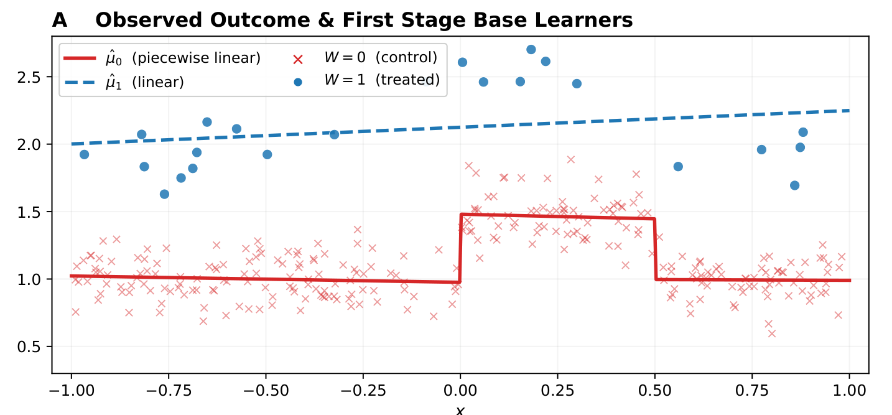
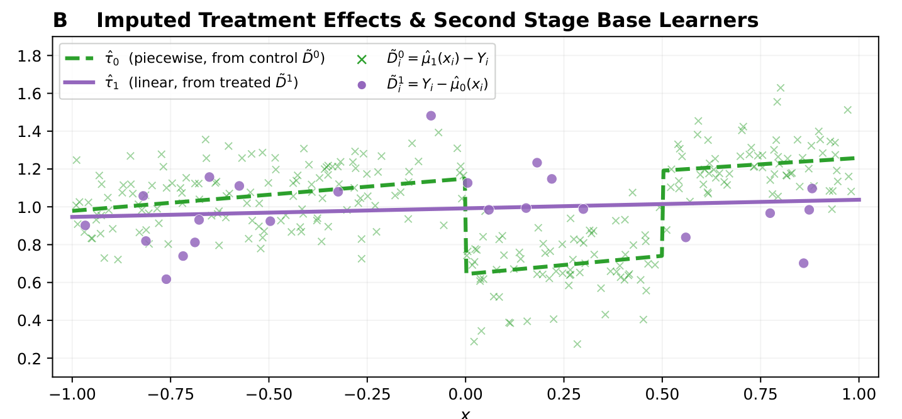
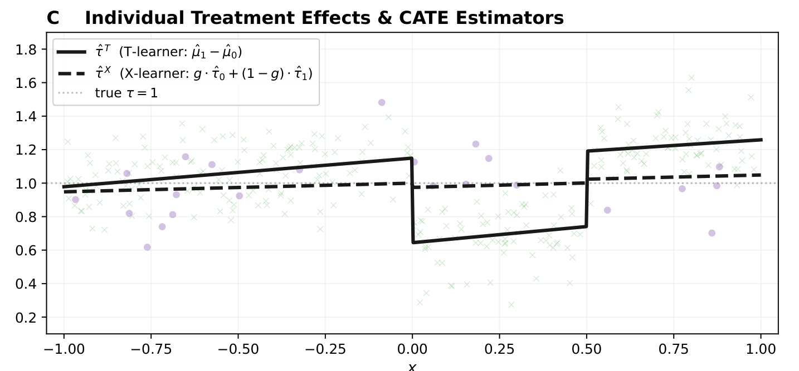

본 포스트는 서울대학교 GSDS Sanghack Lee 교수님의 Causal Inference 강의 자료(10-3강 CATE: Heterogeneous Treatment Effects)를 바탕으로, 강의를 처음 듣는 독자도 논리적 흐름을 따라갈 수 있도록 재구성한 것입니다. 전반부의 효과 수정 논의는 Hernán & Robins의 What If 4장(4.1–4.3절)을, 후반부의 메타 러너 논의는 Künzel et al. (2019, PNAS)과 Kennedy (2023)를 계보로 합니다.
한 줄 요약 (TL;DR)
“평균 처치효과 하나로는 ’누구에게 효과가 있는가’라는 질문에 답할 수 없으며, 그 답은 조건부 평균 처치효과 곡선 \(\tau(z)\) 자체를 추정해야 얻어진다.”
앞선 회차들은 모두 하나의 스칼라 — 평균 처치효과(ATE) — 를 어떻게 편향 없이 추정할 것인가에 집중했습니다. 그런데 모집단 전체의 ATE가 정확히 \(0\)인데도 여성에게는 \(+0.2\), 남성에게는 \(-0.2\)의 효과가 존재할 수 있습니다. 즉 ATE는 서로 상쇄되는 효과들의 잔해일 수 있습니다. 전통적인 처방은 \(Z\)의 수준별로 층을 나누어 각각 효과를 추정하는 층화 분석이었지만, 연속형 수정변수를 이산화해야 하고 공변량이 늘어나면 층의 개수가 지수적으로 폭발합니다. 이번 회차는 층화를 명시적으로 수행하지 않고도 조건부 평균 처치효과(CATE) \(\tau(z) = E[Y(1) - Y(0) \mid Z = z]\)를 유연한 기계학습 모형으로 직접 학습하는 메타 러너(meta-learner) 계열 — S-러너, T-러너, X-러너, 그리고 이중 강건 점수를 재활용하는 DR-러너 — 을 정리합니다.
Part I. 왜 이질적 처치효과인가 (Why Heterogeneous Treatment Effects?)
먼저 “왜 굳이 평균을 넘어서야 하는가”를 짚습니다. 이 물음에 대한 답은 통계적 정교함의 문제가 아니라 인과 질문 자체의 정의에 관한 문제입니다.
1. 평균은 오해를 부를 수 있습니다 (The Average Can Be Misleading)
1.1 20명의 예시
20명으로 이루어진 모집단을 생각해 봅시다. 절반은 여성(\(Z = 1\)), 절반은 남성(\(Z = 0\))입니다. 처치 \(X\)가 사망 위험 \(Y\)에 미치는 효과를 보려 하는데, 모집단 전체의 평균 인과효과는 정확히 0이라고 합시다.
\[ P(Y(1) = 1) - P(Y(0) = 1) = 0.5 - 0.5 = 0 \]
여기까지만 보면 “이 처치는 아무 효과가 없다”고 결론 내리기 쉽습니다. 그러나 하위집단(subgroup)으로 내려가면 전혀 다른 그림이 나타납니다.
- 여성(\(Z = 1\))에서의 인과 위험차(causal risk difference) \[ P(Y(1) = 1 \mid Z = 1) - P(Y(0) = 1 \mid Z = 1) = 0.6 - 0.4 = +0.2 \] → 처치가 사망 위험을 높입니다.
- 남성(\(Z = 0\))에서의 인과 위험차 \[ P(Y(1) = 1 \mid Z = 0) - P(Y(0) = 1 \mid Z = 0) = 0.4 - 0.6 = -0.2 \] → 처치가 사망 위험을 낮춥니다.
1.2 두 값은 어떻게 0으로 합쳐지는가
남녀가 정확히 절반씩이므로, 전확률 법칙에 의해 주변 확률은 두 층의 단순 평균입니다.
\[ P(Y(1) = 1) = \tfrac{1}{2}(0.6) + \tfrac{1}{2}(0.4) = 0.5, \qquad P(Y(0) = 1) = \tfrac{1}{2}(0.4) + \tfrac{1}{2}(0.6) = 0.5 \]
- 따라서 ATE \(= 0.5 - 0.5 = 0\)입니다. 계산에 오류가 있는 것이 아니라, \(+0.2\)와 \(-0.2\)가 정확히 상쇄되어 0이 만들어진 것입니다.
- 여기서 ATE가 0이라는 사실은 “아무 일도 일어나지 않았다”는 뜻이 아닙니다. 20명 중 절반은 처치로 인해 위험이 커졌고, 나머지 절반은 위험이 작아졌습니다. 평균은 그 두 사실을 모두 지워 버립니다.
일반적으로 “그 처치의 인과효과”라는 단일한 대상은 존재하지 않습니다. 인과효과는 연구 대상 모집단의 구성(characteristics of the population under study)에 의존합니다.
같은 처치, 같은 결과 변수라도 남성이 많은 모집단에서 재면 “이롭다”는 답이 나오고, 여성이 많은 모집단에서 재면 “해롭다”는 답이 나옵니다. (Hernán & Robins, What If, Ch. 4.1)
2. 효과 수정 (Effect Modification)
2.1 정의
\(X\)가 \(Y\)에 미치는 평균 인과효과가 \(Z\)의 수준에 따라 달라질 때, \(Z\)를 \(X \to Y\) 효과의 수정변수(effect modifier)라고 부릅니다.
여기서 중요한 것은 “달라진다”를 어떤 척도(scale)에서 재느냐입니다. 강의는 두 가지 척도를 명시적으로 구분합니다.
- 가법적 효과 수정(additive effect modification) — 차이(difference)로 잰 효과가 층마다 다른 경우입니다. \[ E[Y(1) - Y(0) \mid Z = 1] \neq E[Y(1) - Y(0) \mid Z = 0] \]
- 승법적 효과 수정(multiplicative effect modification) — 비(ratio)로 잰 효과가 층마다 다른 경우입니다. \[ \frac{E[Y(1) \mid Z = 1]}{E[Y(0) \mid Z = 1]} \neq \frac{E[Y(1) \mid Z = 0]}{E[Y(0) \mid Z = 0]} \]
2.2 척도에 따라 답이 달라집니다
강의가 곧바로 덧붙이는 경고가 이것입니다.
- 한 척도에서는 효과 수정이 발견되지만 다른 척도에서는 발견되지 않을 수 있습니다.
간단한 수치로 확인해 보겠습니다. 다음과 같은 위험도를 가정합시다.
| 층 | \(E[Y(1) \mid Z]\) | \(E[Y(0) \mid Z]\) | 차이(가법) | 비(승법) |
|---|---|---|---|---|
| \(Z = 1\) | 0.2 | 0.1 | \(+0.1\) | \(2.0\) |
| \(Z = 0\) | 0.4 | 0.2 | \(+0.2\) | \(2.0\) |
- 가법 척도에서는 \(0.1 \neq 0.2\)이므로 효과 수정이 있습니다.
- 승법 척도에서는 위험비가 두 층 모두 \(2.0\)으로 같으므로 효과 수정이 없습니다.
- 즉 “\(Z\)는 효과 수정변수인가?”라는 질문은 척도를 지정하지 않으면 답할 수 없는 질문입니다.
2.3 질적 효과 수정 (Qualitative Effect Modification)
- 질적 효과 수정이란 층에 따라 효과의 부호가 반대가 되는 경우를 말합니다. §1의 20명 예시가 정확히 이 경우입니다(여성 \(+0.2\), 남성 \(-0.2\)).
- 질적 효과 수정이 존재하면 두 척도 모두에서 효과 수정이 성립합니다. 부호가 반대라는 것은 차이의 값이 다르다는 뜻이고(가법), 동시에 한쪽에서는 위험비가 1보다 크고 다른 쪽에서는 1보다 작다는 뜻이므로 비도 다를 수밖에 없기 때문입니다(승법).
효과 수정변수 \(Z\)는 “조정해야 할 교란변수”와 개념적으로 다릅니다.
- 교란(confounding)은 편향의 원천이며, 조정하지 않으면 추정값이 틀립니다.
- 효과 수정은 편향이 아니라 자연의 사실입니다. 조정하지 않아도 ATE 추정값 자체는 옳지만, 그 옳은 ATE가 어느 하위집단에도 해당하지 않는 값일 수 있습니다.
전자는 “값이 틀렸다”의 문제이고, 후자는 “질문이 잘못됐다”의 문제입니다.
3. 효과 수정에 왜 관심을 가져야 하는가 (Why Care About Effect Modification?)
강의는 세 가지 이유를 듭니다.
1. 정책 표적화(policy targeting) — 누가 이득을 보는가를 식별합니다.
- 처치가 여성에게 해롭고 남성에게 이로운 질적 효과 수정 상황이라면, 다른 정보가 없는 한 의사는 남성에게만 처치할 것입니다.
- ATE만 보고 있었다면(=0) “이 약은 쓸모없다”고 판단해 남성이 얻을 수 있었던 이득까지 함께 버렸을 것입니다.
2. 이식가능성(transportability) — 효과는 다른 모집단으로 일반화되지 않을 수 있습니다.
- 연구 모집단과 목표 모집단에서 효과 수정변수(성별, 연령 등)의 분포가 다르면, 두 모집단의 ATE도 달라집니다.
- §1의 예시에서 연구 모집단은 남녀 반반이라 ATE가 0이었지만, 여성이 80%인 목표 모집단이라면 ATE는 \(0.8 \times 0.2 + 0.2 \times (-0.2) = +0.12\)가 됩니다. 처치의 성질이 바뀐 것이 아니라 모집단의 구성이 바뀐 것뿐인데 결론이 뒤집힙니다.
3. 기전의 이해(understanding mechanisms)
- 효과 수정은 결과에 이르는 생물학적 · 사회적 기전을 드러내는 단서가 됩니다. 어떤 특성을 가진 사람에게서 효과가 커지는지가 곧 “무엇이 효과를 매개하는가”에 대한 힌트이기 때문입니다.
3.1 하나의 수정변수에서 공변량 벡터 전체로
지금까지는 \(Z\)를 성별 같은 하나의 이진 변수로 두고 이야기했습니다. 이를 자연스럽게 확장하면, 공변량 벡터 \(Z\) 전체로 조건화한 다음 양이 나옵니다.
\[ \tau(z) = E[Y(1) - Y(0) \mid Z = z] \]
공변량이 \(Z = z\)인 하위집단에서의 평균 처치효과입니다. (Hernán & Robins, What If, Ch. 4.3)
- \(\tau(z)\)는 스칼라가 아니라 함수입니다. 이 점이 이번 회차와 앞선 회차들을 가르는 결정적인 차이입니다. 지금까지의 추정 대상은 실수 하나였지만, 이제부터의 추정 대상은 \(z\)에 대한 곡면 전체입니다.
- ATE는 이 함수를 \(Z\)의 분포로 평균 낸 값에 불과합니다: \(\tau_{\text{ATE}} = E_Z[\tau(Z)]\). §1의 예시는 이 평균이 함수의 모양에 대해 얼마나 적은 정보를 담고 있는지를 보여 준 셈입니다.
4. 층화에서 CATE 추정으로 (From Stratification to CATE Estimation)
4.1 전통적 접근: 층화 분석 (Stratified Analysis)
- \(Z\)의 각 수준(층, stratum) 안에서 \(X\)가 \(Y\)에 미치는 인과효과를 각각 계산합니다.
- 층별 효과 측도를 서로 비교하여 효과 수정 여부를 판정합니다.
이는 §1–§3에서 손으로 해 온 일을 그대로 절차화한 것입니다. 남성 층에서 한 번, 여성 층에서 한 번 ATE를 추정하고 두 값을 비교하는 방식이지요.
4.2 층화의 한계
문제는 \(Z\)가 성별 하나가 아닐 때 발생합니다. 강의는 세 가지 한계를 지적합니다.
- 연속형 수정변수의 이산화가 필요합니다. 연령이나 혈압 같은 연속 변수는 층을 만들기 위해 반드시 구간으로 잘라야 하는데, 어디서 자르느냐는 임의적이고 그 선택이 결론을 바꿉니다. 또한 구간 내부의 변동은 통째로 버려집니다.
- 공변량이 많아지면 층의 개수가 지수적으로 증가합니다(차원의 저주). 이진 공변량이 \(p\)개면 층은 \(2^p\)개입니다. \(p = 20\)이면 백만 개가 넘는 층이 생깁니다.
- 각 층의 관측치가 너무 적어 신뢰할 만한 추정이 불가능해집니다. 층이 \(2^p\)개로 쪼개지는 동안 표본 크기 \(n\)은 그대로이므로, 층당 평균 관측치는 \(n / 2^p\)로 급감합니다. 결국 각 층에서의 추정치는 분산이 폭발해 층 간 비교 자체가 무의미해집니다.
층화는 편향과 분산 사이의 잔인한 교환을 강요합니다.
- 층을 잘게 나눌수록 \(\tau(z)\)를 세밀하게 근사할 수 있지만(편향 ↓), 층당 표본이 줄어 추정이 요동칩니다(분산 ↑).
- 층을 거칠게 나누면 추정은 안정되지만(분산 ↓), 층 내부의 이질성이 다시 평균으로 뭉개집니다(편향 ↑).
핵심 문제는 층화가 인접한 층끼리 정보를 공유하지 못한다는 데 있습니다. 45세 층과 46세 층은 사실상 같은 사람들인데도 완전히 독립적으로 추정됩니다. 다음 절의 접근은 정확히 이 지점을 공략합니다 — \(\tau(z)\)가 \(z\)에 대해 매끄럽다는 가정을 회귀 모형에 맡겨 정보를 빌려 쓰는 것입니다.
4.3 현대적 접근
- 이에 현대적 CATE 추정량들(메타 러너, 인과 숲(causal forest) 등)은 유연한 기계학습 모형을 활용하여, 명시적인 층화 없이 \(\tau(z)\)를 직접 추정합니다.
- 층을 사람이 정의하는 대신, 회귀 모형이 데이터로부터 “어디를 어떻게 나눌지”를 스스로 결정하게 만드는 셈입니다.
Part II. CATE를 위한 메타 러너 (Meta-Learners for CATE)
메타 러너(meta-learner)란 특정 기계학습 알고리즘이 아니라, 임의의 지도학습 알고리즘(기저 학습기, base learner)을 부품처럼 끼워 넣어 CATE 추정량을 조립하는 레시피를 말합니다. 랜덤 포레스트를 넣든 그래디언트 부스팅을 넣든 신경망을 넣든 절차 자체는 동일하기 때문에 “메타”라는 이름이 붙었습니다.
이하에서 사용할 표기를 먼저 정리합니다.
| 표기 | 의미 |
|---|---|
| \(X\) | 처치 변수 (이진) |
| \(Z\) | 공변량 벡터 |
| \(e(z) = P(X = 1 \mid Z = z)\) | 성향 점수(propensity score) |
| \(\mu_x(z) \approx E[Y(x) \mid Z = z]\) | 처치 \(x\) 하에서의 반응 함수(response function) |
| \(\tau(z) = E[Y(1) - Y(0) \mid Z = z]\) | 추정 대상, CATE |
5. 메타 러너: T-러너와 S-러너 (Meta-Learners: T-Learner and S-Learner)
5.1 T-러너 (“Two models”)
처치군과 대조군에 대해 서로 다른 두 개의 모형을 따로 적합합니다.
- \(\hat\mu_1(z)\): 처치군 데이터만 사용해 적합
- \(\hat\mu_0(z)\): 대조군 데이터만 사용해 적합
두 예측 곡면의 차이가 CATE 추정치가 되고, 이를 표본 전체에 대해 평균 내면 ATE 추정치가 됩니다.
\[ \hat\tau^T(z) = \hat\mu_1(z) - \hat\mu_0(z), \qquad \widehat{\text{ATE}}^T = \frac{1}{n}\sum_{i=1}^{n}\big\{\hat\mu_1(Z_i) - \hat\mu_0(Z_i)\big\} \]
5.2 S-러너 (“Single model”)
처치 변수 \(X\)를 하나의 공변량으로 취급하여 단일 모형을 적합합니다.
\[ \hat\mu(z, x) \approx E[Y \mid Z = z,\ X = x] \]
CATE는 같은 모형에 \(x = 1\)과 \(x = 0\)을 각각 대입해 뺀 값입니다.
\[ \hat\tau^S(z) = \hat\mu(z, 1) - \hat\mu(z, 0), \qquad \widehat{\text{ATE}}^S = \frac{1}{n}\sum_{i=1}^{n}\big\{\hat\mu(Z_i, 1) - \hat\mu(Z_i, 0)\big\} \]
5.3 두 레시피의 대비
| T-러너 | S-러너 | |
|---|---|---|
| 적합하는 모형 수 | 2개 (팔별로 분리) | 1개 (처치를 공변량으로) |
| 두 팔 사이의 정보 공유 | 없음 | 있음 (모수를 공유) |
| 학습 데이터 | 각 모형이 해당 팔의 데이터만 사용 | 전체 데이터 사용 |
- T-러너는 두 반응 함수가 완전히 다른 모양이어도 각각 자유롭게 적합할 수 있습니다. 대신 한쪽 팔의 표본이 적으면 그쪽 모형이 곧바로 무너지고, 그 오차가 차감을 통해 CATE 추정치로 그대로 전이됩니다.
- S-러너는 전체 데이터를 공유하므로 표본을 아끼지만, 학습기가 \(X\)를 중요하지 않은 변수로 판단해 정규화로 눌러 버리면 \(\hat\mu(z,1) \approx \hat\mu(z,0)\)이 되어 CATE 추정치가 0 쪽으로 수축될 수 있습니다.
- 다음 절들이 다루는 회귀 대입 추정량과 X-러너는, 특히 T-러너의 약점 — 두 팔의 표본 크기가 크게 불균형할 때 — 을 겨냥한 처방입니다. (Künzel et al., 2019, PNAS)
6. 회귀 대입 추정량 (Regression Imputation Estimator)
6.1 아이디어
반사실(counterfactual)은 관측되지 않지만, 관측된 쪽은 굳이 모형으로 예측할 필요가 없습니다. 회귀 대입(regression imputation)은 이 상식을 그대로 추정량으로 옮깁니다.
- 관측된 잠재적 결과는 실제 관측값 \(Y_i\)를 그대로 씁니다.
- 관측되지 않은 잠재적 결과만 예측값 \(\hat\mu_x(Z_i)\)로 채워 넣습니다.
\[ \hat\tau^{RI} = \frac{1}{n}\sum_{i=1}^{n} \Big[\underbrace{X_i Y_i + (1 - X_i)\hat\mu_1(Z_i)}_{\widehat{Y_i(1)}} - \underbrace{\big\{(1 - X_i) Y_i + X_i \hat\mu_0(Z_i)\big\}}_{\widehat{Y_i(0)}}\Big] \]
6.2 직관: 단위별로 무엇을 쓰는가
| 단위 | \(Y(1)\) 자리에 넣는 값 | \(Y(0)\) 자리에 넣는 값 |
|---|---|---|
| 처치 단위 (\(X_i = 1\)) | 관측값 \(Y_i\) | 대입값 \(\hat\mu_0(Z_i)\) |
| 대조 단위 (\(X_i = 0\)) | 대입값 \(\hat\mu_1(Z_i)\) | 관측값 \(Y_i\) |
- 위 식에서 \(X_i = 1\)을 대입하면 각괄호 안은 \(Y_i - \hat\mu_0(Z_i)\)가 되고, \(X_i = 0\)을 대입하면 \(\hat\mu_1(Z_i) - Y_i\)가 됩니다.
- 이는 앞 회차(11강)에서 결과 회귀 추정량을 대입 관점으로 다시 쓴 형태 \[ \hat\tau_{\text{adj}} = \frac{1}{N}\sum_{i=1}^{N}\Big\{X_i\big(Y_i - \hat m_0(Z_i)\big) + (1 - X_i)\big(\hat m_1(Z_i) - Y_i\big)\Big\} \] 와 정확히 같은 추정량입니다. 표기만 \(m_x \to \mu_x\)로 바뀌었을 뿐입니다.
- 순수한 T-러너 ATE 추정량 \(\frac{1}{n}\sum(\hat\mu_1(Z_i) - \hat\mu_0(Z_i))\)과 비교하면 차이가 분명합니다. T-러너는 모든 단위에 대해 두 값 모두를 예측하는 반면, 회귀 대입은 절반은 실제 관측값으로 대체합니다. 관측값에는 모형 오설정 오차가 없으므로, 그만큼 모형에 대한 의존이 줄어듭니다.
7. X-러너 (X-Learner for CATE)
7.1 동기
T-러너의 아픈 지점은 두 팔의 표본 크기가 크게 다를 때입니다. 예를 들어 처치를 받은 사람이 전체의 5%뿐이라면, \(\hat\mu_1\)은 극소수의 데이터로 적합되어 신뢰할 수 없고, \(\hat\tau^T = \hat\mu_1 - \hat\mu_0\)는 그 오차를 고스란히 물려받습니다.
X-러너는 두 번의 교차 대입(cross-imputation)을 통해 이 문제를 우회합니다. 이름의 ’X’는 처치군과 대조군이 서로의 모형을 교차해서 사용하는 구조에서 왔습니다.
7.2 절차
1단계 — 반응 함수 추정. T-러너와 동일하게 두 반응 함수를 적합합니다. \[ \hat\mu_0(z) \approx E[Y(0) \mid Z = z], \qquad \hat\mu_1(z) \approx E[Y(1) \mid Z = z] \]
2단계 — 개별 처치효과의 대입. 각 단위에 대해 반대편 팔의 모형으로 반사실을 채워 개별 처치효과를 대입합니다. \[ \text{(처치 단위)}\quad \tilde{D}^1_i := Y_i - \hat\mu_0(z_i), \qquad \text{(대조 단위)}\quad \tilde{D}^0_i := \hat\mu_1(z_i) - Y_i \] 그리고 이 대입값들을 각각 \(Z\)에 회귀시켜 두 개의 CATE 추정량을 얻습니다. \[ \hat\tau_1(z) \approx E[\tilde{D}^1_i \mid Z = z], \qquad \hat\tau_0(z) \approx E[\tilde{D}^0_i \mid Z = z] \]
3단계 — 가중 결합. 가중 함수 \(g(z) \in [0, 1]\)로 두 추정량을 결합합니다(예: \(g(z) = \hat e(z)\)). \[ \hat\tau(z) = g(z)\,\hat\tau_0(z) + \big(1 - g(z)\big)\,\hat\tau_1(z) \] 여기서 \(\hat\tau_1\)은 처치군으로부터, \(\hat\tau_0\)는 대조군으로부터 얻어진 2단계의 CATE 추정량입니다.
7.3 왜 이 구조가 작동하는가
핵심은 어느 쪽 대입값이 어느 모형에 의존하는지를 따져 보는 데 있습니다.
- \(\tilde{D}^1_i = Y_i - \hat\mu_0(z_i)\) — 처치 단위에 대해 계산되지만, 예측 오차의 원천은 \(\hat\mu_0\)입니다. 즉 \(\hat\tau_1\)의 품질은 대조군 모형의 품질에 달려 있습니다.
- \(\tilde{D}^0_i = \hat\mu_1(z_i) - Y_i\) — 대조 단위에 대해 계산되지만, 예측 오차의 원천은 \(\hat\mu_1\)입니다. 즉 \(\hat\tau_0\)의 품질은 처치군 모형의 품질에 달려 있습니다.
처치군이 희소한 상황을 생각해 봅시다. 그러면 \(\hat\mu_1\)은 나쁘고 \(\hat\mu_0\)는 좋으므로, \(\hat\tau_1\)은 믿을 만하고 \(\hat\tau_0\)는 오염되어 있습니다. 그리고 이때 성향 점수는 \(\hat e(z) \approx 0\)이므로, \(g = \hat e\)를 쓰면
\[ \hat\tau(z) = \underbrace{\hat e(z)}_{\approx\, 0}\hat\tau_0(z) + \underbrace{\big(1 - \hat e(z)\big)}_{\approx\, 1}\hat\tau_1(z) \approx \hat\tau_1(z) \]
가 되어 자동으로 믿을 만한 쪽에 가중치가 실립니다. 성향 점수를 가중 함수로 고르는 선택이 임의적이지 않은 이유가 여기에 있습니다.
7.4 그림으로 따라가는 X-러너
강의는 처치군이 극소수인 인위적 예제로 세 단계를 시각화합니다. 참 CATE는 모든 \(x\)에서 \(\tau = 1\)로 고정되어 있고, 성향 점수는 \(\hat e \approx 0.05\)입니다.



\(\hat\mu_0\)은 잘 추정되고 \(\hat\mu_1\)은 부실하게 추정된 상황에서, T-러너는 부실한 \(\hat\mu_1\)과 좋은 \(\hat\mu_0\)을 그냥 빼서 양쪽의 오차를 모두 안고 가는 반면, X-러너는 좋은 \(\hat\mu_0\)에만 의존하는 경로(\(\hat\tau_1\))를 골라내어 그쪽에 성향 점수로 가중치를 몰아 준다는 것입니다.
8. DR-러너: 이중 강건 CATE 추정 (DR-Learner: Doubly Robust CATE Estimation)
8.1 아이디어
앞 회차(11강)에서 유도한 이중 강건(DR) 점수를 그대로 가져오되, 이번에는 그것을 평균 내는 대신 \(Z\)에 회귀시켜 \(\tau(z) = E[Y(1) - Y(0) \mid Z = z]\)를 학습합니다.
8.2 절차
1단계 — 장애 모수(nuisance) 추정. 반응 함수 \(\hat\mu_x(z)\)와 성향 점수 \(\hat e(z)\)를 추정합니다.
2단계 — 유사 결과(pseudo-outcome) 구성. \[ \tilde{Y}_i = \frac{X_i\big(Y_i - \hat\mu_1(Z_i)\big)}{\hat e(Z_i)} - \frac{(1 - X_i)\big(Y_i - \hat\mu_0(Z_i)\big)}{1 - \hat e(Z_i)} + \hat\mu_1(Z_i) - \hat\mu_0(Z_i) \]
3단계 — 회귀. \(\tilde{Y}_i\)를 \(Z_i\)에 임의의 유연한 방법으로 회귀시켜 \(\hat\tau(z)\)를 얻습니다.
- 2단계의 \(\tilde{Y}_i\)는 낯선 식이 아닙니다. 11강의 DR 추정량 형태 ②(결과 회귀를 IPW 잔차로 증강한 형태) \[ \hat\tau_{\text{dr}} = \frac{1}{N}\sum_i \left[\hat\mu_1(Z_i) + \frac{X_i\{Y_i - \hat\mu_1(Z_i)\}}{\hat e(Z_i)}\right] - \frac{1}{N}\sum_i \left[\hat\mu_0(Z_i) + \frac{(1 - X_i)\{Y_i - \hat\mu_0(Z_i)\}}{1 - \hat e(Z_i)}\right] \] 의 피가수(summand) 그 자체입니다. 즉 \(\hat\tau_{\text{dr}} = \frac{1}{n}\sum_i \tilde{Y}_i\)입니다.
- 그러므로 ATE와 CATE의 차이는 같은 점수를 평균 낼 것인가, \(Z\)에 회귀시킬 것인가의 차이로 압축됩니다. 평균은 \(Z\) 정보를 버리는 특수한 회귀(상수 함수로의 회귀)일 뿐입니다.
8.3 왜 DR-러너인가
강의는 세 가지 근거를 제시합니다.
① 장애 모수가 옳으면 유사 결과의 조건부 기댓값이 정확히 CATE입니다.
\[ E[\tilde{Y}_i \mid Z_i = z] = \tau(z) \]
이를 단계별로 확인해 보겠습니다. 이하에서 \(\hat\mu_x = \mu_x\), \(\hat e = e\)(참값)라 하고, 비교란성 \(\{Y(1), Y(0)\} \perp\!\!\!\perp X \mid Z\)와 일관성 \(Y = XY(1) + (1-X)Y(0)\)을 가정합니다.
1단계 (첫 번째 항). 일관성에 의해 \(X_i Y_i = X_i Y_i(1)\)이므로,
\[ E\!\left[\frac{X(Y - \mu_1(Z))}{e(Z)} \,\Big|\, Z = z\right] = \frac{1}{e(z)}\, E\big[X\{Y(1) - \mu_1(z)\} \mid Z = z\big] \]
\(Z = z\)로 조건화한 상태에서 \(e(z)\)와 \(\mu_1(z)\)는 상수이므로 밖으로 빠져나옵니다.
2단계 (비교란성 적용). \(X \perp\!\!\!\perp Y(1) \mid Z\)에 의해 조건부 기댓값이 분리됩니다.
\[ E\big[X\{Y(1) - \mu_1(z)\} \mid Z = z\big] = \underbrace{E[X \mid Z = z]}_{=\, e(z)} \cdot \underbrace{E\big[Y(1) - \mu_1(z) \mid Z = z\big]}_{=\, \mu_1(z) - \mu_1(z) \,=\, 0} = 0 \]
마지막 등식은 \(\mu_1\)이 올바르게 설정되어 \(E[Y(1) \mid Z = z] = \mu_1(z)\)이기 때문입니다.
3단계 (두 번째 항). 대칭적으로 \((1 - X)Y = (1-X)Y(0)\)이고 \(E[1 - X \mid Z = z] = 1 - e(z)\)이므로,
\[ E\!\left[\frac{(1 - X)(Y - \mu_0(Z))}{1 - e(Z)} \,\Big|\, Z = z\right] = 0 \]
4단계 (최종식). 앞의 두 항이 모두 0이므로 남는 것은 세 번째 항뿐입니다.
\[ E[\tilde{Y} \mid Z = z] = 0 - 0 + \mu_1(z) - \mu_0(z) = E[Y(1) \mid Z=z] - E[Y(0) \mid Z=z] = \tau(z) \]
즉 \(\tilde{Y}\)는 관측 불가능한 개별 처치효과 \(Y_i(1) - Y_i(0)\)을 대신하는, 조건부 기댓값이 정확히 \(\tau(z)\)인 대리 결과변수입니다. 그래서 그것을 \(Z\)에 회귀시키기만 하면 CATE가 나옵니다. \(\blacksquare\)
② 나이만 직교성(Neyman orthogonality) — 장애 모수의 오차가 \(\hat\tau\)에 2차(second order)로만 영향을 줍니다.
- 11강에서 DR 추정량의 잔차 항이 두 오차의 곱 \[ R = E\!\left[\frac{e_{\text{true}}(Z) - e(Z)}{e(Z)}\big\{\mu_{1,\text{true}}(Z) - \mu_1(Z)\big\}\right] \] 으로 인수분해된다는 것을 보았습니다. 같은 구조가 여기서도 작동합니다.
- 그 결과 \(\hat\mu\)와 \(\hat e\)가 각각 \(n^{-1/4}\)처럼 느린 속도로만 수렴해도, 두 오차의 곱은 \(n^{-1/2}\) 속도로 사라져 \(\hat\tau(z)\)의 성능에는 거의 영향을 주지 않습니다. 유연한 기계학습 모형을 장애 모수 추정에 마음 놓고 쓸 수 있는 근거가 바로 이것입니다.
③ \(\tau(z)\) 자체의 복잡도에 적응합니다.
- 장애 함수 \(\mu_x(z)\)나 \(e(z)\)가 아무리 복잡하더라도, \(\tau(z)\)가 단순하다면 DR-러너는 그 단순함에 맞는 속도로 수렴합니다.
- 이것은 실무적으로 매우 자연스러운 상황입니다. 결과의 수준(level)은 수십 개 공변량에 복잡하게 의존하지만 처치효과의 크기 자체는 매끄럽고 단순한 경우가 흔하기 때문입니다. 3단계에서 \(\tilde{Y}\)를 회귀하는 모형만 \(\tau\)의 복잡도에 맞추면 되므로, 이 구조가 자동으로 활용됩니다.
같은 데이터로 \(\hat\mu, \hat e\)를 적합하고 그 데이터로 \(\tilde{Y}_i\)까지 만들면, 장애 모수가 자기 자신의 관측치에 과적합되어 \(\tilde{Y}_i\)에 체계적 편향이 스며듭니다(overfitting bias).
실무에서는 반드시 \(K\)-겹 교차 적합을 씁니다.
- 폴드 \(k\)를 제외한 데이터로 \(\hat\mu, \hat e\)를 추정하고,
- 그 추정치를 사용해 폴드 \(k\)에서만 \(\tilde{Y}_i\)를 구성합니다.
- 모든 폴드에 대해 반복해 얻은 \(\tilde{Y}\) 전체를 \(Z\)에 회귀시킵니다.
정리하며 (Closing Remarks)
이번 회차는 “평균 하나로 충분한가”라는 물음에서 출발해, 층화 분석의 한계를 지나, CATE 곡선을 직접 학습하는 네 개의 레시피에 도달했습니다. 논증의 사슬을 단계별로 압축하면 다음과 같습니다.
| 단계 | 내용 | 근거 |
|---|---|---|
| ① 문제 제기 | ATE \(= 0\)인데도 여성 \(+0.2\), 남성 \(-0.2\)일 수 있다 — 평균은 상반된 효과를 지운다 | 20명 예시 (What If Ch. 4.1) |
| ② 개념 정립 | 효과가 \(Z\)의 수준에 따라 달라지면 \(Z\)는 효과 수정변수이며, 가법 · 승법 척도에서 답이 다를 수 있다 | 효과 수정의 정의 |
| ③ 동기 부여 | 정책 표적화 · 이식가능성 · 기전 이해 — 세 가지 모두 하위집단별 효과를 요구한다 | What If Ch. 4.3 |
| ④ 대상 확장 | 하나의 수정변수에서 공변량 벡터 전체로 조건화하면 \(\tau(z) = E[Y(1)-Y(0)\mid Z=z]\) — 스칼라가 아니라 함수가 추정 대상이 된다 | CATE의 정의 |
| ⑤ 고전적 처방의 붕괴 | 층화는 연속 변수 이산화를 강요하고, 층의 수가 \(2^p\)로 폭발하며, 층당 표본이 고갈된다 | 차원의 저주 (What If Ch. 4.2) |
| ⑥ 기본 레시피 | 두 반응 함수를 따로 적합해 빼거나(T), 처치를 공변량으로 넣어 한 번에 적합한다(S) | Künzel et al. (2019) |
| ⑦ 관측값 활용 | 반사실만 예측값으로 채우고 관측된 쪽은 \(Y_i\)를 그대로 쓴다 — 11강의 결과 회귀 추정량과 동일 | 회귀 대입 추정량 |
| ⑧ 불균형에 대한 처방 | 교차 대입으로 두 개의 CATE 추정량을 만들고, \(g = \hat e\)로 좋은 \(\hat\mu\)에 의존하는 쪽에 가중치를 몰아 준다 | X-러너, Figure A–C |
| ⑨ 이중 강건화 | DR 점수를 평균 내는 대신 \(Z\)에 회귀시킨다 — \(E[\tilde{Y}\mid Z=z] = \tau(z)\)이고 장애 모수 오차는 2차로만 영향을 준다 | DR-러너 (Kennedy, 2023) |
추정량별로 다시 정리하면 다음과 같습니다.
| 레시피 | 구성 | 강점 | 취약점 |
|---|---|---|---|
| S-러너 | 단일 모형 \(\hat\mu(z,x)\) | 전체 데이터를 공유해 표본을 아낌 | 학습기가 \(X\)를 눌러 버리면 효과가 0으로 수축 |
| T-러너 | 팔별 모형 \(\hat\mu_1, \hat\mu_0\) | 두 반응 함수가 달라도 자유롭게 적합 | 한쪽 팔이 희소하면 그 오차가 그대로 전이 |
| 회귀 대입 | 관측값 + 반사실만 대입 | 절반은 모형 오차가 없음 | 여전히 결과 모형에만 의존 |
| X-러너 | 교차 대입 + \(g = \hat e\) 가중 | 표본 불균형에 강건 | 가중 함수 선택과 2단계 회귀의 설계가 필요 |
| DR-러너 | DR 유사 결과를 \(Z\)에 회귀 | 나이만 직교성, \(\tau\)의 복잡도에 적응 | \(\hat e\)가 0·1에 가까우면 유사 결과가 폭발, 교차 적합 필수 |
개인적인 감상 몇 가지를 덧붙입니다.
- 가장 인상적인 지점은 X-러너의 가중 함수로 하필 성향 점수가 등장한다는 사실입니다. 11강에서 \(\hat e(z)\)는 “역수를 취해 가중치로 쓰는” 대상이었는데, 여기서는 어느 추정 경로를 신뢰할지 고르는 스위치로 재활용됩니다. 처치군이 희소하면 \(\hat e \approx 0\)이고, 바로 그 희소함 때문에 \(\hat\mu_1\)이 부실하며, \(\hat\mu_1\)에 의존하는 \(\hat\tau_0\)의 가중치가 \(\hat e\)만큼으로 줄어듭니다. “신뢰할 수 없는 이유”와 “가중치를 줄이는 근거”가 동일한 하나의 양으로 표현된다는 점이 이 설계의 아름다움이라고 생각합니다.
- Figure B가 보여 주는 역설도 오래 남습니다. 보라색 점(처치 단위, 20여 개)에서 얻은 \(\hat\tau_1\)이, 초록색 점(대조 단위, 수백 개)에서 얻은 \(\hat\tau_0\)보다 훨씬 좋습니다. 추정의 품질을 결정하는 것은 그 점들의 개수가 아니라 그 점들을 만들 때 사용한 모형의 품질이기 때문입니다. “데이터가 많은 쪽이 낫다”는 직관이 반사실 대입이라는 절차를 거치는 순간 뒤집힌다는 것을, 이 그림만큼 간결하게 보여 주는 예를 보기 어렵습니다.
- DR-러너가 사실상 새로운 것이 아니라는 점이 오히려 이 회차의 백미입니다. 유사 결과 \(\tilde{Y}_i\)는 11강 DR 추정량의 피가수 그대로이고, 달라진 것은 그것을 평균 내는 대신 회귀시킨다는 한 줄뿐입니다. 평균이란 결국 상수 함수로의 회귀이므로, ATE 추정은 CATE 추정의 가장 거친 특수 사례였던 셈입니다. 이렇게 보면 지금까지 배운 모든 ATE 추정량이 \(Z\) 정보를 자발적으로 버리고 있었다는 시각이 열립니다.
- 실용적 한계도 정직하게 남아 있습니다. DR-러너의 유사 결과는 \(\hat e(Z_i)\)로 나누는 항을 포함하므로, 양의 확률성(positivity)이 아슬아슬한 영역에서는 \(\tilde{Y}_i\)가 폭발합니다. 11강에서 IPW를 괴롭혔던 극단적 가중치 문제가 그대로, 그러나 이번에는 개별 관측치 수준에서 되살아나는 것입니다. 게다가 CATE 추정에는 ATE에 없던 어려움이 하나 더 있습니다 — 추정 대상이 함수이므로 신뢰구간을 함수 전체에 대해 구성해야 하고, 어느 하위집단에서 효과가 유의한지를 사후적으로 고르는 순간 다중비교 문제가 따라붙습니다. 이 지점들은 이번 강의가 “intro”라는 이름을 달고 있는 이유이기도 합니다.